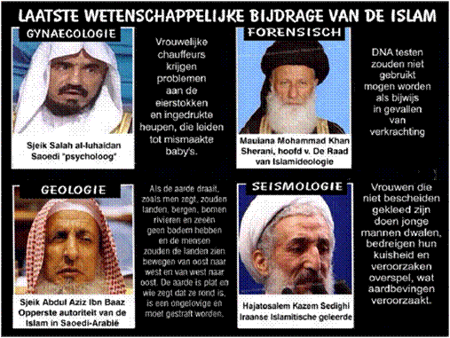

Door: Franklin ter Horst (Aangemaakt:
11 januari 2009) (Laatste bewerking: 1 januari 2015)
De Nobelprijs
werd ingesteld in
De wereld telt ca 12 miljoen Joden dat is 0.2 procent van de totale wereldbevolking. De Arabisch/ islamitische wereld telt ca 1.2 miljard moslims. Dat is ruim 20 procent van de totale wereldbevolking, maar ze leveren minder dan 1 procent van het totale aantal beoefenaars van wetenschap. Er bestaat wat dat betreft een enorme verschil tussen het Joodse volk en de Arabieren en de volgelingen van Mohammed in zijn algemeenheid. Het is verbijsterend hoe weinig de moslims bijdragen aan de menselijke vooruitgang. Dood en verderf, hel en verdoemenis lijkt de voorkeur te hebben. Praktisch alles wat ze aan gemakken hebben is in het westen ontwikkeld en geproduceerd.
De vredelievende koorknaapjes van Hamas en
consorten
In de laatste honderd jaar ontvingen slechts negen Arabieren de Nobelprijs, waaronder twee Arabische christenen en de vroegere president van Egypte Anwar Sadat en voormalig vliegtuigkaper en aartsterrorist Jasser Arafat. Uit de database van het Nobelprijs comité blijkt dat zelfs Adolf Hitler ooit genomineerd is voor de Nobelprijs voor de vrede.De prijs is niet toegekend omdat de nominatie ingetrokken werd. Hitler had zich evenwel in goed gezelschap bevonden met Arafat en andere boeven.De keuze van het Nobelprijscomité om Arafat met de prijs van de vrede te honoreren, maakt nog eens duidelijk hoe verdwaasd deze wereld is.Karre Kristiansen, een voormalig lid van het Nobel Comité, trok zich in 1994 terug uit protest voor het toekennen van de Nobelprijs aan de terreurbaas. Maar ook de keuze van de voormalige Egyptische president Anwar Sadat, is niet te rijmen. Dat hem de prijs voor de vrede is toegekend heeft Sadat te danken aan het feit dat hij naar Jeruzalem is gegaan om vrede met Israël te sluiten. Maar slechts een paar jaar daarvoor, in 1972, riep hij bereid te zijn een miljoen soldaten op te offeren in de strijd tegen Israël. Hij was van mening, dat alleen een totale oorlog tot een oplossing kon leiden. Een jaar later, in mei 1973, mobiliseerde hij het Egyptische leger. Vervolgens koos hij voor het recept van een verrassingsaanval met de bedoeling Israël in één klap te vernietigen, maar Egypte en de andere Arabische landen in de coalitie, werden opnieuw op een vernietigende nederlaag getrakteerd.
Anwar
Sadat met stropdas met hakenkruis motief,
in conclaaf met de Israëlische premier Menachem Begin.
De uit Syrië afkomstige Farid N.Ghadry, schetst in een artikel “Israel Builds for Nobel Prizes, Arabs Build for Suicide Bombers”, een duidelijk beeld van wat de Arabieren bezield. Volgens hem is het een algemeen bekend verschijnsel dat de islam in ontwikkeling eeuwen achterloopt met de joods-christelijke cultuur. De totale islamitische wereldbevolking bevat nog niet half zoveel wetenschappers als Israël.,,Daar waar de Israëli’s het individu aanmoedigen om de kwaliteit van het leven te verbeteren, is in de Arabische cultuur het bereiken van het zelfmoordmartelaarschap, het hoogst haalbare” aldus Ghadry. ,,In verscheidene islamitische landen is wetenschappelijk onderzoek vrijwel niet mogelijk omdat het in strijd zou zijn met de islam. Het moslimextremisme zorgt ervoor dat de islamitische wereld op terreinen als onderwijs, onderzoek en gezondheidszorg ver achter blijft bij het westen.”. Dit is niet de uitspraak van een islamhater maar van de voormalige Libische leider Moammer Kadhaffi, geciteerd in de Gazet van Antwerpen, 25 maart 2006.
Niet alleen het hoge percentage Joden onder de Nobelprijswinnaars is verbazend, maar ook nog andere feiten. Zo is bijvoorbeeld in de Verenigde Staten 60 procent van de afgestudeerden van de Yale Universiteit, Jood. 26 procent van alle professoren in de rechtswetenschappen in de Verenigde Staten is Jood en 40 procent van de leidende advocaten in New York en Washington zijn eveneens van Joodse afkomst. Bovendien is een derde van de Amerikaanse miljardairs van Joodse afkomst. In verhouding tot de totale bevolking van de VS zijn deze getallen des te verbazingwekkender. Slechts twee procent van de Amerikaanse burgers is Jood. Israël is wereldleider in een aantal wetenschappelijke en technische middelen, dat is 63% meer dan de Verenigde Staten. Het heeft ook het hoogste aantal artsen en ingenieurs per hoofd van de bevolking. Israëlische instellingen voor wetenschappelijk onderzoek worden gepositioneerd als derde in de wereld.
(*)Wat
slechts weinig mensen weten is dat Israël ook in de landbouw met gemiddeld
bijna
De Israëlische prof. Israel Gannot heeft een medische behandeling ontwikkeld waarmee tumoren kunnen worden aangevallen zonder pijn of straling. Gannot gebruikt een speciale mix van nano-deeltjes – die al zijn uitgetest door de “Food and Drug Administration” (FDA) De antistoffen sporen individuele tumoren op en leggen een magnetisch veld om de tumor en beletten de tumor zich verder te ontwikkelen en te verspreiden, aldus Gannot. Dit magnetische veld zorgt er tevens voor dat de temperatuur rond de tumor stijgt waardoor de tumor word vernietigd. De hele behandeling duurt ca 6 uur waarna de patiënt niet in het ziekenhuis hoeft te blijven en gewoon thuis kan herstellen.
Een Israëlisch bedrijf heeft een apparaat ontwikkeld voor het opsporen van huidkanker in een vroeg stadium. “Met de vroege opsporing zijn bijna alle vormen van huidkanker te genezen”, zegt Yossi Biderman, Bestuursvoorzitter van Skin Cancer Scanning, een Israëlisch bedrijf dat de technologische doorbraak ontwikkelde door met behulp van glasvezelkabels te scannen op mogelijk kwaadaardige moedervlekken. Klinische proeven bij het Rabin Medical Center in het centrum van Israël laten zien dat het systeem met een efficiëntie van 92% bepaalde vormen van huidkanker opspoort -. een hoger percentage dan dat van thans beschikbaar apparaat.
In de Verenigde Staten zijn meer octrooien geregistreerd afkomstig uit Israël dan uit Rusland, India en China samen (2.5 miljard inwoners). Israëlische bedrijven zijn de uitvinders van het systeem van druppelirrigatie en is daarmee wereldleider op het gebied van waterbesparingssystemen. Men hun kennis op dit gebied helpen ze ontwikkelingslanden bij het terugdringen van de woestijn. Het heeft hiertoe honderden centra opgericht in deze landen om expertise over te dragen. Israël loopt voorop op het gebied van onderzoek en ontwikkeling van preventieve geneeskunde. Zij ontdekten het meest gebruikte medicijn in de wereld voor de bestrijding van multiple sclerose, hebben de chip ontworpen voor Pentium NMXV en voor Pentium 4 etc. Verder produceren de Israëlische koeien meer melk per koe dan enig ander land in de wereld.
In het Middeleeuwse Spanje was 41 procent van de geleerden Jood, terwijl het aandeel van de bevolking 2.7 procent bedroeg. In de 14e eeuw n.Chr., was één procent van de wereldbevolking van Joodse herkomst; toch vormden zij destijds 17.6 procent van alle geleerden. Tussen 1819 en 1935 was ongeveer 20 procent van de Duitse economische elite Jood, terwijl hun aandeel aan de Duitse bevolking nauwelijks meer dan één procent bedroeg.
Een
onderzoek door Verenigde Naties heeft uitgewezen dat de gemiddelde Arabier in
het Midden Oosten slechts vier pagina's
'literatuur' leest per jaar. Ter vergelijk: een Amerikaan leest in dezelfde
periode gemiddeld 11 boeken, een Engelsman 8. Uit het onderzoek bleek verder
dat er in de Arabische wereld elk jaar één nieuw boek per 12.000 inwoners wordt
gepubliceerd. In Groot Brittannië is dat 1 boek per 500 inwoners. In Israël
komen jaarlijks meer dan 4000 nieuwe titels uit, wat na China het hoogste
aantal per inwoner ter wereld is. Volgens de Arab Thought Foundation,
die de culturele ontwikkeling in de Arabische landen in de gaten houdt, wil
maar iets meer dan 8% van de Arabieren een hogere opleiding volgen. In een interview met Memri-tv , uitte het
voormalige hoofd van het Internationale Atoom Energie Agentschap (IAEA) de
Egyptenaar Muhammad El Baradei, forse kritiek op zijn eigen Arabische-
Islamitische cultuur. Volgens hem is de Arabische wereld nog nooit zo diep
gezonken als tegenwoordig: ,,Wij leveren geen enkele bijdrage aan de
menselijke beschaving op het gebied van bijvoorbeeld wetenschap, cultuur en
literatuur. Landen worden in onze tijd niet beoordeeld aan de grootte van hun
legers en het aantal tanks dat ze hebben, maar aan hun bijdrage aan de
menselijke beschaving, zoals het aantal auteurs, wetenschappers, mensen dus die
iets creëren.”
Qanta Ahmed, een dokter en moslima van Pakistaanse origine, en inwoner van Groot-Brittannië, noemt Israël een bron van “Inspiratie voor de hele Islamitische wereld”. Ahmed is auteur van "In the Land of Invisible Women: A Female Doctor's Journey in Saudi Arabia." Zij vertelde United With Israel virtueel het hele Midden-Oosten te zijn doorgereisd en geen land tegengekomen te zijn met zo’n nivo van “vrijheid en integratie”.
Waarom je kind een boek geven, als ze ook wat ‘nuttigs’
kunnen doen...
De Saoedische
intellectueel Ibrahim
Al-Buleihi roept de Arabieren op om de grootsheid van de westerse cultuur
en de tekortkomingen van de eigen cultuur te erkennen. In een interview in de
Saoedische krant Okaz op 23 april 2009, prijst Al-Buleihi de westerse
beschaving de hemel in. Op de vraag waarom hij zo gefascineerd is door de
westerse cultuur, zegt hij tegen de interviewer: ,,Kijk om je heen. Al het
mooie in ons leven komt voort uit de westerse beschaving.” De pen in je
hand, de recorder waarmee je ons gesprek opneemt, het licht in deze kamer, de
krant waarvoor je werkt…zonder de uitvindingen van het westen was ons leven
dor. “De westerse beschaving is superieur in alle aspecten van het leven.
Het heeft de mensheid bevrijd van zijn illusies en tekortkomingen. De westerse
cultuur is de enige cultuur die het individu erkent en hem de mogelijkheid
geeft zijn dromen na te jagen.” De
Israëlische president Simon Peres zei ooit: “de Israëlisch halen meer uit hun
hersenen dan Saoedi-Arabië aan olie uit de grond.
Ibrahim Al-Buleihi
Zie hier de laatste wetenschappelijke bijdrage van de islam.
Zo
staat Tel Aviv na Silicon Valley in Californië, op een lijst van belangrijkste high-tech centra
van de wereld op basis van een internationale studie. Silicon Valley is de
thuishaven van bedrijven zoals Google, Apple, Facebook en anderen. Steeds meer
organisaties en kerken roepen op tot een boycot van Israëlische producten uit
Samaria en Judea en soms zelfs uit heel Israël. In Nederland gaat het om
organisaties als Kairos, Pax Christie, Sabeel, The Rights Forum (Dries
van Agt en consorten.) ICCO en anderen. Sommigen stellen zelfs het
bestaansrecht van Israël als Joodse staat ter discussie. Ook een groeiend
aantal Europese universiteiten, vakbonden en de ondernemingen hebben besloten
om Israëlische producten te boycotten alsmede individuele Israëliërs
(gewoonlijk academici), Israëlische orkesten en theatergroepen.
Volgens professor Israel Aumann loutert en scherpt Bijbelstudie een mens. ‘De studie van de Torah vormde het volk Israël tot een goede en uitstekende natie’. De wiskundige, afkomstig uit Duitsland, met de Israëlische en de Amerikaanse nationaliteit, ontving in 2005 de Nobelprijs voor economie. ‘Hoe kan het toch, dat uit een klein volk van 14 miljoen Joden, 187 Joden de Nobelprijs hebben gewonnen? Het is een gevolg van Joodse waarden, waarbij de studie van de Torah het belangrijkste en hoogste is’. Tijdens een radio-uitzending hamerde Aumann herhaaldelijk op het belang van het kennen van Gods Woord, ja dat het zelfs een intellectuele roeping is. Hij zei: ‘Het bestuderen van de Tora is nog belangrijker dan het houden van de sabbat. Uit de Bijbel weten we dat God koning Hizkia en zijn volk beschermde tegen de Assyrische koning Sanherib, omdat ze de Tora hadden bestudeerd. Wie het lezen van de Tora de hoogste prioriteit geeft, plukt daar de vruchten van in zijn beroep en in al zijn omstandigheden.’
Volgens Harry Ostrer, een medisch geneticus en professor aan het ‘Albert Einstein College of Medicine’ in New York, hebben Joden een aparte genetische ‘handtekening’. Met DNA-onderzoek kan dus worden vastgesteld of iemand tot het Joodse volk behoort of niet. Als dit echt waar is, en daar lijkt het wel op, dan zou je dit misschien wel Gods eigen handtekening kunnen noemen, die Hij op Zijn volk heeft gezet.
Terug naar: Inhoud